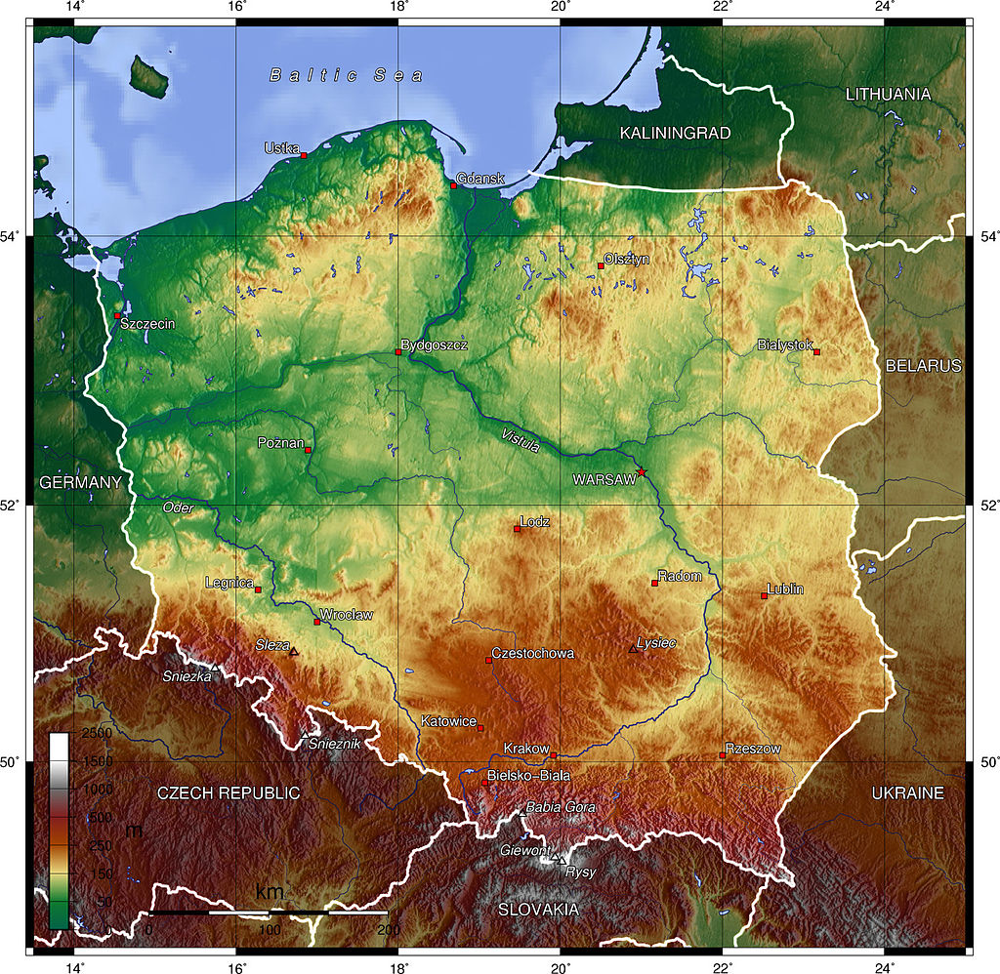

History
Prehistory and protohistory
The first Stone Age archaic humans and Homo erectus species settled what was to become Poland approximately 500,000 years ago. However, the harsh climate of that time hindered the establishment of permanent settlements by early humans [27]. The arrival of Homo sapiens and anatomically modern humans coincided with the climatic changes at the end of the Last Glacial Period (10,000 BC), which rendered Poland habitable [28]. Excavations from the Neolithic period revealed significant advancements. For instance, the earliest evidence of European cheesemaking (5500 BC) was found in Polish Kuyavia [29]. Additionally, the Bronocice pot bears the earliest known depiction that may represent a wheeled vehicle (3400 BC) [30].
The era spanning the Bronze Age and the Early Iron Age (1300 BC–500 BC) witnessed a surge in population density, the establishment of fortified settlements known as gords, and the expansion of Lusatian culture [31][32]. One of the notable archaeological discoveries from Poland's protohistory is the fortified settlement at Biskupin, attributed to the Lusatian culture of the Late Bronze Age (mid-8th century BC) [33].
From around 400 BC to 500 AD, various ancient populations inhabited the territory of present-day Poland, including Celtic, Scythian, Germanic, Sarmatian, Baltic, and Slavic tribes [34]. Additionally, archaeological evidence confirmed the presence of Roman Legions sent to safeguard the amber trade [35]. The Polish tribes emerged after the second wave of the Migration Period around the 6th century AD. These tribes were predominantly Slavic and might have included assimilated remnants of earlier inhabitants of the area [36][37]. Starting in the early 10th century, the Polans began to assert dominance over other Lechitic tribes in the region. Initially forming a tribal federation, they later established a centralized monarchical state.
Kingdom of Poland
Poland began to form into a recognisable unitary and territorial entity around the middle of the 10th century under the Piast dynasty.[39] In 966, ruler of the Polans Mieszko I accepted Christianity under the auspices of the Roman Church with the Baptism of Poland.[40] An incipit titled Dagome iudex first defined Poland's geographical boundaries with its capital and bishopric at Gniezno, and affirmed that its monarchy was under the protection of the Apostolic See.[41] The country's early origins were described by Gallus Anonymus in Gesta principum Polonorum, the oldest Polish chronicle.[42] An important national event of the period was the martyrdom of Saint Adalbert, who was killed by Prussian pagans in 997 and whose remains were reputedly bought back for their weight in gold by Mieszko's successor, Bolesław I the Brave.
In 1000, at the Congress of Gniezno, Bolesław obtained the right of investiture from Otto III, Holy Roman Emperor, who assented to the creation of additional bishoprics.[41] Three new dioceses were subsequently established in Kraków, Kołobrzeg, and Wrocław.[43] Also, Otto bestowed upon Bolesław royal regalia and a replica of the Holy Lance, which were later used at his coronation as the first King of Poland in c. 1025, when Bolesław received permission for his coronation from Pope John XIX.[44][45] Bolesław also expanded the realm considerably by seizing parts of German Lusatia, Czech Moravia, Upper Hungary and southwestern regions of the Kievan Rus'.
The transition from paganism in Poland was not instantaneous and resulted in the pagan reaction of the 1030s.[47] In 1031, Mieszko II Lambert lost the title of king and fled amidst the violence.[48] The unrest led to the transfer of the capital to Kraków in 1038 by Casimir I the Restorer.[49] In 1076, Bolesław II re-instituted the office of king, but was banished in 1079 for murdering his opponent, Bishop Stanislaus.[50] In 1138, the country fragmented into five principalities when Bolesław III Wrymouth divided his lands among his sons.[23] These comprised Lesser Poland, Greater Poland, Silesia, Masovia and Sandomierz, with intermittent hold over Pomerania.[51] In 1226, Konrad I of Masovia invited the Teutonic Knights to aid in combating the Baltic Prussians; a decision that led to centuries of warfare with the Knights.
Polish–Lithuanian Commonwealth
The Union of Lublin of 1569 established the Polish–Lithuanian Commonwealth, a unified federal state with an elective monarchy, but largely governed by the nobility.[75] The latter coincided with a period of prosperity; the Polish-dominated union thereafter becoming a leading power and a major cultural entity, exercising political control over parts of Central, Eastern, Southeastern and Northern Europe. The Polish–Lithuanian Commonwealth occupied approximately 1 million km2 (390,000 sq mi) at its peak and was the largest state in Europe.[76][77] Simultaneously, Poland imposed Polonisation policies in newly acquired territories which were met with resistance from ethnic and religious minorities.
In 1573, Henry de Valois of France, the first elected king, approbated the Henrician Articles which obliged future monarchs to respect the rights of nobles.[78] His successor, Stephen Báthory, led a successful campaign in the Livonian War, granting Poland more lands across the eastern shores of the Baltic Sea.[79] State affairs were then headed by Jan Zamoyski, the Crown Chancellor.[80] In 1592, Sigismund III of Poland succeeded his father, John Vasa, in Sweden.[81] The Polish-Swedish union endured until 1599, when he was deposed by the Swedes
In 1609, Sigismund invaded Russia which was engulfed in a civil war,[23] and a year later the Polish winged hussar units under Stanisław Żółkiewski occupied Moscow for two years after defeating the Russians at Klushino.[23] Sigismund also countered the Ottoman Empire in the southeast; at Khotyn in 1621 Jan Karol Chodkiewicz achieved a decisive victory against the Turks, which ushered the downfall of Sultan Osman II.
Culture
The culture of Poland is closely connected with its intricate 1,000-year history, and forms an important constituent in the Western civilisation.[340] The Poles take great pride in their national identity which is often associated with the colours white and red, and exuded by the expression biało-czerwoni ("whitereds").[341] National symbols, chiefly the crowned white-tailed eagle, are often visible on clothing, insignia and emblems.[342] The architectural monuments of great importance are protected by the National Heritage Board of Poland.[343] Over 100 of the country's most significant tangible wonders were enlisted onto the Historic Monuments Register,[344] with further 17 being recognised by UNESCO as World Heritage Sites.
There are 13 government-approved annual public holidays – New Year on 1 January, Three Kings' Day on 6 January, Easter Sunday and Easter Monday, Labour Day on 1 May, Constitution Day on 3 May, Pentecost, Corpus Christi, Feast of the Assumption on 15 August, All Saints' Day on 1 November, Independence Day on 11 November and Christmastide on 25 and 26 December.
Geography
Poland covers an administrative area of 312,722 km2 (120,743 sq mi), and is the ninth-largest country in Europe. Approximately 311,895 km2 (120,423 sq mi) of the country's territory consists of land, 2,041 km2 (788 sq mi) comprises internal waters and 8,783 km2 (3,391 sq mi) is territorial sea.[177] Topographically, the landscape of Poland is characterised by diverse landforms, water bodies and ecosystems.[178] The central and northern region bordering the Baltic Sea lie within the flat Central European Plain, but its south is hilly and mountainous.[179] The average elevation above the sea level is estimated at 173 metres.[177]
The country has a coastline spanning 770 km (480 mi); extending from the shores of the Baltic Sea, along the Bay of Pomerania in the west to the Gulf of Gdańsk in the east.[177] The beach coastline is abundant in sand dune fields or coastal ridges and is indented by spits and lagoons, notably the Hel Peninsula and the Vistula Lagoon, which is shared with Russia.[180] The largest Polish island on the Baltic Sea is Wolin, located within Wolin National Park.[181] Poland also shares the Szczecin Lagoon and the Usedom island with Germany.[182]
The mountainous belt in the extreme south of Poland is divided into two major mountain ranges; the Sudetes in the west and the Carpathians in the east. The highest part of the Carpathian massif are the Tatra Mountains, extending along Poland's southern border.[183] Poland's highest point is Mount Rysy at 2,501 metres (8,205 ft) in elevation, located in the Tatras.[184] The highest summit of the Sudetes massif is Mount Śnieżka at 1,603.3 metres (5,260 ft), shared with the Czech Republic.[185] The lowest point in Poland is situated at Raczki Elbląskie in the Vistula Delta, which is 1.8 metres (5.9 ft) below sea level.[177]
Poland's longest rivers are the Vistula, the Oder, the Warta, and the Bug.[177] The country also possesses one of the highest densities of lakes in the world, numbering around ten thousand and mostly concentrated in the north-eastern region of Masuria, within the Masurian Lake District.[186] The largest lakes, covering more than 100 square kilometres (39 sq mi), are Śniardwy and Mamry, and the deepest is Lake Hańcza at 108.5 metres (356 ft) in depth.[177]